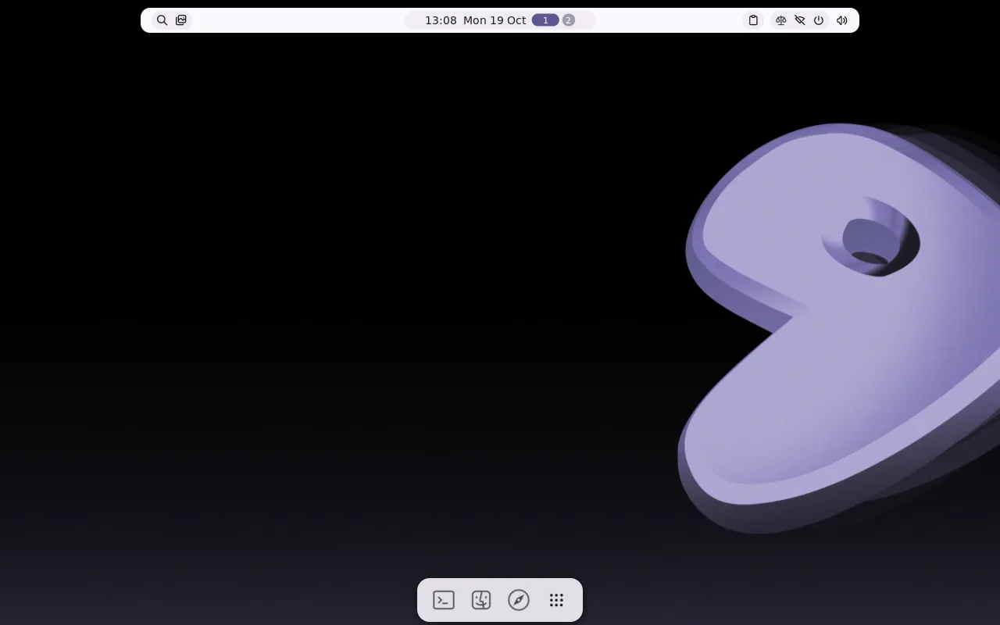
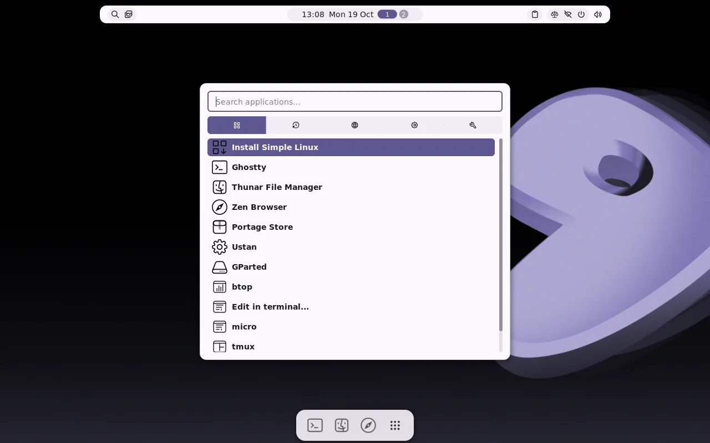
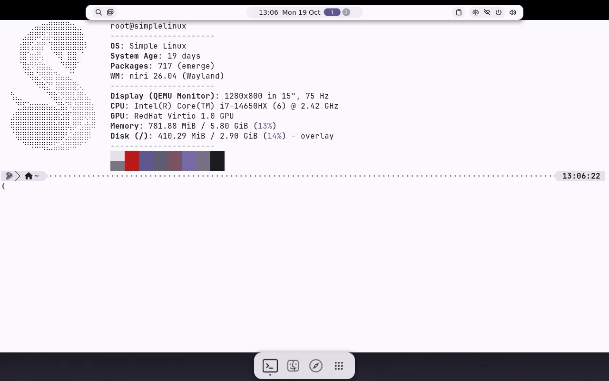
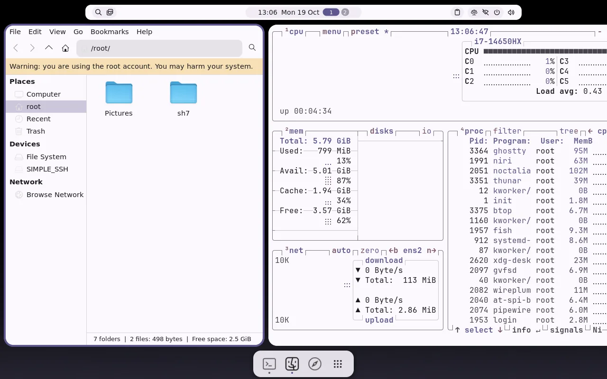

Projects /
Simple Linux
A small Gentoo-based live system with its own installer, a kernel matched to the hardware, and a ready desktop.
What it is
Simple Linux is a small Gentoo-based live system with its own installer. It ships as two bootable images (a text one and a GUI one), the stage3 they install from, a kernel, and the desktop setup the GUI image boots into. Gentoo stays underneath: Portage, OpenRC, your own USE flags and overlays all remain available. What I wanted to remove is the first day of a Gentoo install, the typing and the hours of compiling.
It is for people who like Gentoo but do not want to follow the handbook by hand, and it is for me, as the system I actually run. It is young. If you want a distribution that is finished and supported today, use one of those; if you want Gentoo without the first day, try this and tell me what happens.

How it fits together
The repository holds what comes out of the build and the parts that are configuration rather than code. The installer and the scripts that build the images live in gentoo-installer. The pieces:
- Images. Boot on BIOS and UEFI through Limine, with dracut live boot on OverlayFS. Both are Secure Boot capable but not Microsoft-signed.
- Kernel. Live kernel 7.1.8 (the CachyOS-patched tree, a generic config). The full
.configand the fragment added on top ofx86_64_defconfigare inkernel/. The installer copies a prebuilt kernel matched to the hardware instead of compiling one; those come from the binhost repository. - Packages. Binary packages from Gentoo's own binhost, plus the project's own binhost for what Gentoo does not build (niri, Noctalia, ghostty, and packages whose USE flags the installer changes). They are signed and built against the same Portage tree snapshot the installer unpacks.
- Desktop profile.
profile/has the niri config, Noctalia config and settings, and community palettes, derived from my own setup with machine- and person-specific parts removed. - Software groups. The same flavor and mix-in data that drives the installer drives the
slpcommand on an installed system.
What is in the GUI image
The base is a Gentoo stage3 (OpenRC) with fish as root's shell. The GUI image adds niri and Noctalia (colours follow the wallpaper, and the terminal, GTK programs, btop, tmux and fastfetch follow too, through Noctalia's templates), Ghostty, Thunar, GParted, PipeWire, Zen Browser (downloaded on first use), Portage Store, ustan for .deb, AppImage, Flatpak and .exe files, and tui-shim, which makes terminal programs behave like desktop apps. The live system uses a static BusyBox for 83 of the GNU coreutils programs; the installed system keeps GNU coreutils.



Why not a plain Gentoo install
- A real installer with a graphical wizard: partitioning, locale and time zone, user, desktop, software groups and GPU driver are choices on pages, and a failed install can be resumed from where it stopped.
- Flavors and software groups. Pick
minimal,desktoporworkstationand tick groups (office, media, development, gaming, Steam, Minecraft, Craft creative apps and more). The choice is kept on the installed system and changed withslp. - A kernel for your hardware, not compiled on it. The installer detects CPU generation, GPU vendor and laptop or desktop, and copies the matching prebuilt kernel, or a generic x86-64 v2/v3 build when nothing more specific exists.
- Every decision is a
git log. The installer commits what it wrote to/etc/portage, so "what did it do" and "undo it" are ordinary git. - Checkable. The release checksums are signed (
SHA256SUMS.sig) and this repository is configuration, not a blob.
A full install of the desktop and the software groups that existed at 0.2.31 merged 263 packages in a VM and compiled none, in about 15 minutes. That is a VM measurement, not a promise for your machine.
Downloads
Everything large is attached to the Releases page. The current version is 0.2.46 (28 October 2026); there were 43 releases between 5 and 28 October 2026, and versions before 0.1.2 are withdrawn because they did not boot on the first laptop I tried them on.
| File | Size | What it is |
|---|---|---|
simple-linux-minimal.iso | 0.34 GB | text installer, rescue tools, firmware |
simple-linux-gui.iso | 0.48 GB | the same plus the niri + Noctalia desktop and the graphical installer |
simple-linux-gui-offline.iso | 2.0 GB | the GUI image with everything an install downloads; installs without a network |
simple-linux-minimal-offline.iso | 1.9 GB | the same for the text installer |
The sizes are the README's table; the CHANGELOG for 0.2.46 gives slightly different figures in MiB for the images as built then. The offline images carry the default software groups and open-source GPU drivers only. Zen, the optional groups and NVIDIA's driver need a network afterwards.
Verify and boot
The checksums are signed with an ssh key whose public half is in signing/allowed_signers. With the files in one directory:
sh signing/verify.sh .Try it in a VM, or write it to a stick (this erases the stick, so check the device name first):
qemu-system-x86_64 -enable-kvm -m 4096 -cdrom simple-linux-minimal.iso
sha256sum -c --ignore-missing SHA256SUMS
sudo dd if=simple-linux-gui.iso of=/dev/sdX bs=4M status=progress conv=fsyncThe live system logs in as root automatically (empty password) and starts the installer. DHCP runs at boot; Wi-Fi is iwd. Ventoy works: the default mode works since 0.2.15, and grub2 mode works too. If a machine does not start, Limine offers a menu for 3 seconds with a USB workaround, safe graphics (nomodeset), verbose and serial console entries; the README says which to try in which order.
Secure Boot: the images are not Microsoft-signed, so stock firmware refuses them with "Access Denied". Turn Secure Boot off, or enrol secureboot/simple-linux-db.cer in the firmware's db. This was checked under OVMF only. The installed system is not set up for Secure Boot by default; the installer has an option that makes a key on that machine.
niri refuses software rendering. On a machine without hardware-accelerated graphics the GUI image falls back to the text installer after about 25 seconds.
What has and has not been tested
In QEMU/KVM: all four images boot on BIOS and UEFI; the GUI image reaches the niri session with the installer, Thunar, Zen and PipeWire on a virtual 3D GPU; full headless installs from the minimal image onto a blank virtual disk, with the installed system then booting on its own and the created user logging in; a console-only install interrupted and resumed to the end; and a full install of the GUI offline image with the outside network blocked. The generic kernels have no virtual-GPU driver, so I have not seen a picture of the installed desktop in a VM.
On real hardware: installed and booted on two computers, my laptop and an Intel Core i9-14900HX laptop with an NVIDIA GPU, installed from the GUI image next to Windows. The second install needed hand fixes (the NVIDIA module build, iwd not starting for want of kernel options, and the bootloader step stopping on the shared EFI partition). Release 0.2.40 contains those fixes, and they have not been run on that laptop again.
Not done or not confirmed: other machines, the desktop and GPU-driver steps on a real target, the Wi-Fi screen against a real iwd, LUKS (not in the installer), and Secure Boot for the installed system. It is not a binary distribution with its own repository of everything: anything outside Gentoo's binhost and this project's compiles on your machine. I would call it an early build, but a working one. Reports of what the verbose boot entry prints on a failing machine are the most useful thing you can send.
Links
Source, releases, changelog. Related: the installer, Portage Store, ustan, tui-shim. The repository's files are GPL-2.0-or-later like the installer; the images contain many packages under their own licences (see NOTICE.md).